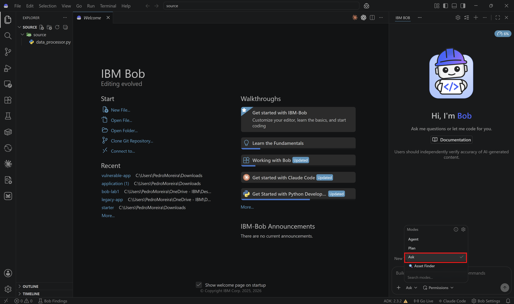
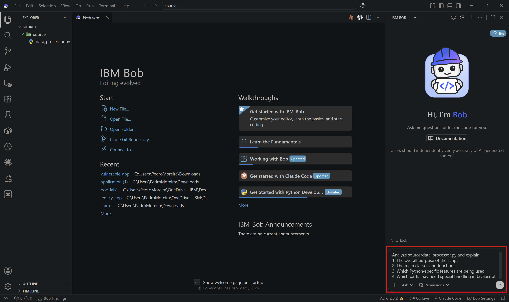
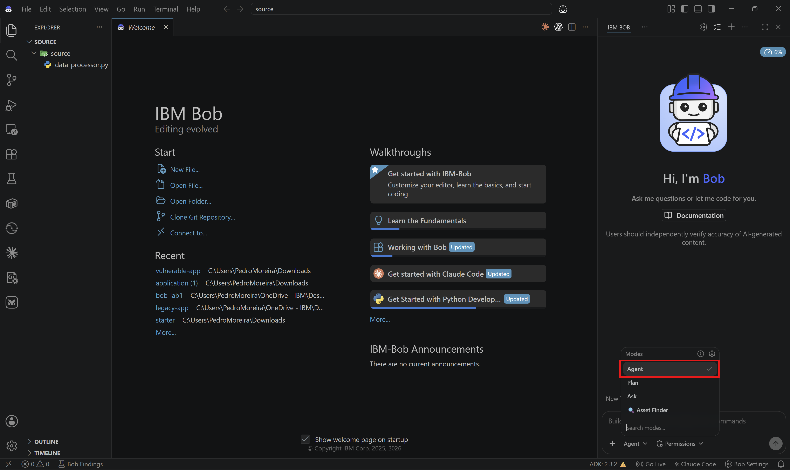
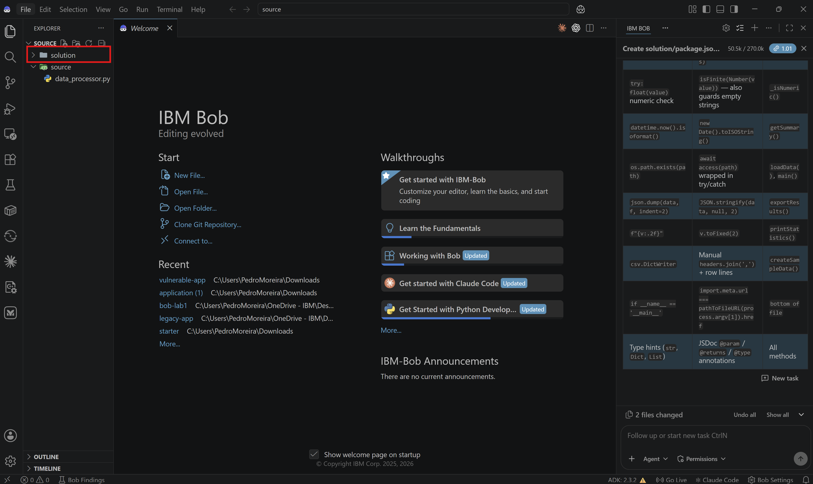
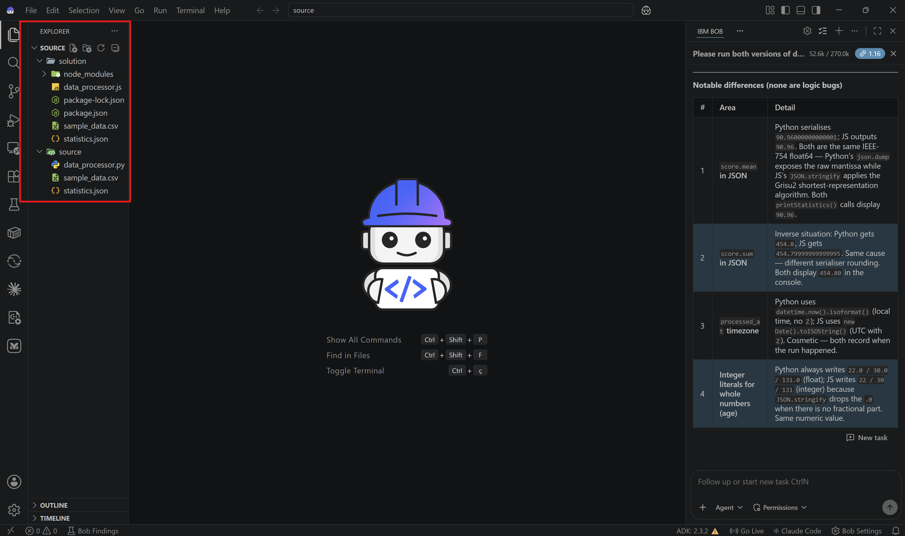

Lab 4: Code Translation - Python to JavaScript with Bob
Overview
In this lab, you'll use Bob to translate a Python data-processing script into an equivalent JavaScript implementation while preserving functionality and applying language-specific best practices.
This reflects a common real-world scenario where teams modernize utilities, port internal tools, or move logic between runtimes without rewriting everything manually.
Before Starting
Make sure you have:
- IBM Bob access
- Python 3.8+
- Node.js 14+
- A terminal
- A local workspace where Bob can create files and run commands
Helpful but not required:
- Basic familiarity with Python and JavaScript
What You'll Translate
You will translate the Python source file source/data_processor.py into a Node.js implementation.
The Python script:
- Reads CSV files
- Performs statistical calculations
- Exports results to JSON
What You'll Learn
By the end of this lab, you will:
- ✅ Use Ask Mode to understand the source code
- ✅ Use Plan Mode to design a translation strategy
- ✅ Use Agent Mode to implement the JavaScript version
- ✅ Compare Python features with JavaScript equivalents
- ✅ Validate that both versions produce the same outcome
Lab Structure
- Review the Python source
- Plan the translation
- Implement the JavaScript version
- Verify and compare both versions
Step 1: Review the Python source
1.1: Download and open the lab folder in Bob
Download the lab files ZIP here. Extract it to a new local folder and open that extracted folder in IBM Bob before starting the exercise.

Review the code structure and pay attention to:
- Class-based design
- Type hints
- Context managers such as
with open(...) - List comprehensions
- Dictionary operations
- CSV and JSON handling
✅ Checkpoint: You have reviewed the Python source file.
1.2: Switch to Ask Mode
Change to Ask Mode.

1.3: Ask Bob to explain the code
Ask Bob:
Analyze source/data_processor.py and explain:
1. The overall purpose of the script
2. The main classes and functions
3. Which Python-specific features are being used
4. Which parts may need special handling in JavaScript

Bob should identify file Input/Output, list processing, JSON export, and the DataProcessor class design.
✅ Checkpoint: You understand the Python implementation before translating it.
1.4: Ask about translation challenges
Still in Ask Mode, ask Bob:
What challenges should we expect when translating source/data_processor.py from Python to JavaScript?
Consider syntax, libraries, async file handling, and type documentation.
Bob should highlight differences such as:
with open(...)versus Node.js file and stream APIscsv.DictReaderversuscsv-parser- Type hints versus JSDoc
- List comprehensions versus array methods
✅ Checkpoint: You understand the main translation challenges.
Step 2: Plan the translation
2.1: Switch to Plan Mode
Change to Plan Mode.
2.2: Create a translation mapping
Ask Bob:
Create a file with the translation plan for converting source/data_processor.py to JavaScript.
Include:
1. Python-to-JavaScript feature mapping
2. Library equivalents
3. Proposed file layout in solution/
4. Any dependency recommendations
5. Validation steps after implementation
Bob should produce a clear mapping before any code is written.
✅ Checkpoint: You have a concrete translation plan.
Step 3: Implement the JavaScript version
3.1: Switch to Agent Mode
Change to Agent Mode.

3.2: Create or update the package configuration
Ask Bob:
Create solution/package.json for the JavaScript translation.
Use Node.js, set data_processor.js as the entry point, and add the dependencies needed for CSV parsing.
✅ Checkpoint: The JavaScript project configuration is ready.
3.3: Translate the Python class
Ask Bob:
Translate source/data_processor.py into solution/data_processor.js.
Include:
1. An equivalent DataProcessor class
2. Async file handling where appropriate
3. JSDoc comments
4. Error handling
5. A runnable main entry point
Bob should generate the translated implementation in the solution/ folder.

✅ Checkpoint: The JavaScript version has been created.
3.4: Ask Bob to explain the translation choices
After the file is generated, switch back to Ask Mode and ask:
Explain the key translation decisions in solution/data_processor.js.
Focus on file I/O, array transformations, error handling, and how the Python main block was mapped to Node.js.
This is useful because translation is not only about syntax. It is also about choosing the right runtime patterns.
✅ Checkpoint: You understand the translated solution, not just the generated code.
Step 4: Verify and compare both versions
4.1: Run and compare the two versions of data_processor
Switch back to Agent mode and ask Bob:
Please run both versions of data_processor: python and javascript.
Compare their outputs and confirm whether both implementations create equivalent CSV-processing and JSON-export behavior.
Review the generated output and result files together.

✅ Checkpoint: Both implementations behave consistently.
Congratulations 🎉 You've completed Lab 4!
You've successfully used Bob to:
- ✅ Analyze Python code
- ✅ Plan a language translation
- ✅ Generate a JavaScript implementation
- ✅ Compare behavior across runtimes
🎓 Lab Quiz — Unlock the Next Lab
Question 1: True or False: Bob can translate a complete application from one programming language to another, preserving the original logic while applying the target language's best practices and conventions.
Question 2: In Lab 4, what does Bob produce during the Plan Mode step before any code is written?
Question 3: Which of the following is a capability of Bob demonstrated in Lab 4?